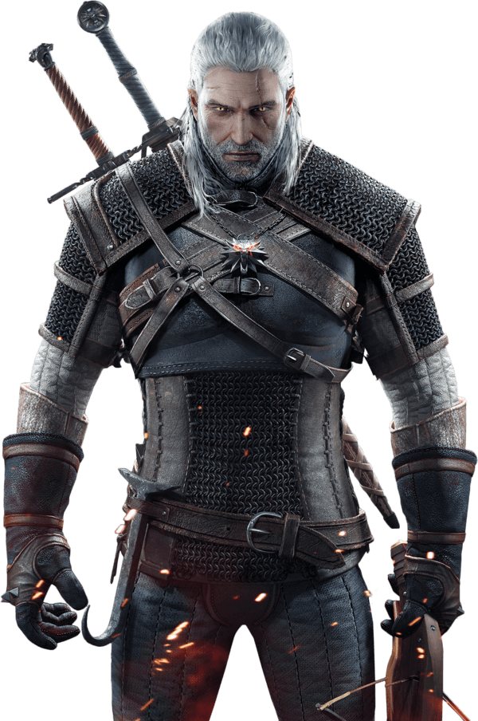
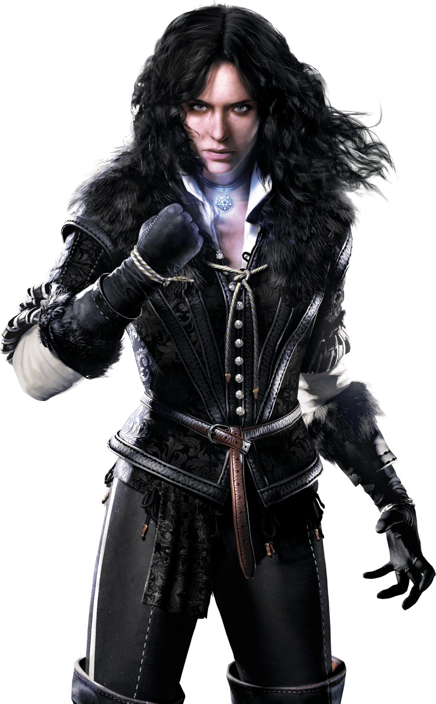

|  |
| Geralt |
|---|
|
Geralt of Rivia is a witcher and the main protagonist of the Witcher series. Like all witchers, Geralt is a monster hunter for hire. He possesses superhuman abilities and is a master swordsman. During the Trial of the Grasses, Geralt exhibited unusual tolerance for the mutagens that grant witchers their abilities. Accordingly, Geralt was subjected to further experimental mutagens which rendered his hair white and may have given him greater speed, strength, and stamina than his fellow witchers. Geralt is also known as Gwynbleidd, meaning "White Wolf" in Elder Speech. He was given this alias by the dryads, and is also called the Butcher of Blaviken after an unfortunate incident in that town. Despite his title, Geralt does not hail from the city of Rivia. After being left with the witchers by his mother, Visenna, he grew up in their keep of Kaer Morhen in the realm of Kaedwen. In the interest of appearing more trustworthy to potential clients, young witchers were encouraged to make up surnames for themselves by master Vesemir. As his first choice, Geralt chose "Geralt Roger Eric du Haute-Bellegarde", but this choice was dismissed by Vesemir as silly and pretentious, so "Geralt" was all that remained of his chosen name. "Of Rivia" was a more practical alternative and Geralt even went so far as to adopt a Rivian accent to appear more authentic. Later, Queen Meve of Lyria knighted him for his valour in the Battle for the Bridge on the Yaruga conferring on him the formal title "of Rivia", which amused him. He, therefore, became a true knight of Lyria, only to lose the title soon after for departing. |

|
| Ciri |
|
Cirilla Fiona Elen Riannon (known as Ciri or the Lion Cub of Cintra), was born in 1253 or 1252[1], and most likely during the Belleteyn holiday. She is a Princess of Cintra, and the daughter of Pavetta and Duny. She is the granddaughter of Queen Calanthe. After Geralt of Rivia lifted a curse from Duny, the Urcheon of Erlenwald, he demanded from Duny his wife Pavetta's firstborn child, a child he had but didn't know he had, due to the Law of Surprise. Six years to the day after the child's birth, Geralt went back to Cintra for her, but did not take her with him to Kaer Morhen at that time. In fact, he didn't even lay eyes on her and only spoke with Calanthe. The Queen divulged no information to him, not even the child's gender. This child was named Cirilla. While she was still an infant, Ciri's parents were both lost in a storm at sea. They were presumed dead. She spent her youth in Cintra and the Skellige Islands in the care of her grandmother and her uncle. Ciri first met Geralt when she was lost in the forest of Brokilon. She was nearly taken by the dryads, who wished to make her one of their own. Geralt thanked the Queen of the dryads, Eithné, for not using the real ritual liquid which would have erased Ciri's memories and her desire to join Geralt, however she encouraged Geralt to drink the liquid and claimed she did no such favor. Geralt brings the bowl close to his face and reacts with strong visions and hallucinations, suggesting Ciri was immune to the ritual somehow. Ciri chose Geralt, and wished to stay with him after they left Brokilon. However, the Witcher would not take her with him. Instead, he left her with the druid Mousesack who was working for Calanthe. |
|  |
| Yenn |
|
Yennefer of Vengerberg (born on Belleteyn of the year 1173) was a sorceress who lived in Vengerberg, the capital city of Aedirn. She was Geralt of Rivia's true love and a mother figure to Ciri, a former royal advisor to king Demavend of Aedirn, and a close friend of Triss Merigold. The lady of Vengerberg was famous for her beauty, even though during the events of The Tower of the Swallow she was 94 years old. Yennefer had locks of curly, raven black hair fragrant with lilac and gooseberry perfume, falling in a cascade of curls on her shapely shoulders. Her face was very pale, triangular in shape with a slightly receded chin. Her eyes were cold and sparkling with a remarkable violet penetrating gaze, in anger blazing with livid, blue-gray fire. Those very eyes also concealed wisdom and imperiousness. Yennefer's nose was slightly long, mouth was pale with thin and slightly crooked, soft, sweet with lipstick, proud lips. On her long and slender neck hung a black marigold with a star made of obsidian sparkling with a multitude of tiny diamonds embedded in it. Yen had pronounced cheekbones, natural, slightly irregular eyebrows trimmed by hand and emphasized with charcoal, long eyelashes, and petite hands. Even in high-heeled shoes she wasn't tall, was beautiful but threatening, having incredibly thin and slender waist and slender legs. Yennefer's skin was as delicate as a sixteen-year-old girl. Her breasts were rounded and delicate, with nipples so pale that they were apparent only by their prominence. |